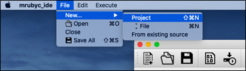

事前準備としてIDEインストールを実施してください。
Windows10
- 「File -> New -> Project」をクリック
- プロジェクト名を入力し「OK」をクリック (ここでは『test』)
- 作成したプロジェクトのフォルダを右クリック後、「Add New...」をクリック
- 追加するRubyファイル名を指定後、「OK」をクリック (ここでは『test.rb』)
- USBケーブルを使用し、ボードとPCを接続
- 適当なプログラムを記述後「Write」ボタンをクリック。（Start connection....）
- ボード上のリセットスイッチを押す。(表面実装の場合「RS」,DIPの場合は「SW1」)
- 「The process "Write" exited normally.」と表示されれば完了。


USBを挿し直してみる。
または書き込み先のCOMポートが異なる場合がある(「Build and Deploy -> Writer」のportを変更)。

mac
- IDEを起動します。
- メニューバーの「File」＞「New」＞「Project」をクリックします。 
- プロジェクト名を入力してOKをクリックします。
作成先のディレクトリはIDEと同じディレクトリを指定します - プロジェクトが作成されます。
- コードを記述するファイルを追加します。
プロジェクトを右クリックして「Add New」をクリックします。 - コードを記述するファイルが作成されます。
- プログラムを書き込むためにRBoardをPCに接続します。
環境設定にて書き込み用のポートが正しく選択されていることを確認ください。
（設定方法はIDEインストールの手順5を参照ください） - 書き込みボタンをクリックします。
※の時に「開発元が検証できないため・・・」のメッセージが表示された場合はIDEインストールの手順2に記載の方法で実行を許可してください。 - 続けて、RBoard上のRSボタン（リセットボタン）を押して離します。
書き込みが完了すると以下のメッセージが表示されます。
例として、プロジェクト名を hanson とします。
例として、ファイル名を sample.rb とします。
作成先のディレクトリは、3.で作成したプロジェクトディレクトリを指定します
記述したプログラムを保存する際は、保存ボタン（フロッピーディスクのアイコン）をクリックしてください。
書き込みボタンをクリックすると画面内に「Start connection」と表示されます。
書き込んだプログラムが正しく動作していることを確認しましょう。

{kind=link}
{kind=link}
{kind=link}
{kind=link}
{kind=link}
{kind=link}
{kind=link}
{kind=link}
{kind=link}
{kind=link}